Capítulo 27
Aquel que oyó el aliento del Universo
Los artistas del cambio de dos siglos a menudo oyen el aliento del Universo. A Dmitri Plavinski nadie pudo enseñárselo.1 No se lo enseñaron en la infancia, no se lo enseñaron en la escuela… Probablemente tampoco se lo enseñaron sus amigos, sus contemporáneos. Precisamente los contemporáneos, y no su generación, porque la generación presupone una característica de edad, mientras que los contemporáneos son personas espiritualmente próximas, y la edad aquí no tiene importancia. En ese sentido, contemporáneo de Dmitri Plavinski es Lev Nikoláievich Gumiliov, que nos dejó una teoría muy íntegra2. Claro que no pueden confundirse la teoría de Gumiliov con las obras de Plavinski, pero la integridad y la escala son propias de ambos.
Esa cualidad, la capacidad de oír el aliento del Universo, es propia en general de los poetas, en mayor medida que de los escritores. Los poetas, de algún modo extraño, salen fuera de los límites de la gravedad terrestre. Les es propia esa nostalgia de vagar por el Universo, de oír la música de las esferas. De los últimos poetas, sin duda, la figura más grande aquí es Velimir Jlébnikov. De nuestros contemporáneos, es Brodski, que tenía muy agudizado el sentimiento de la integridad. Y, por supuesto, Marina Ivánovna Tsvetáieva, con su gran nostalgia universal irremediable, su presentimiento. ¡Qué decir de Pushkin! Pero en realidad esos nombres son muy pocos.
Dmitri Plavinski es un artista de la Antigüedad o de la Edad Media, en el sentido de que le es propia de algún modo algo de lo más importante, tanto como hombre en la vida como como artista en la creación. Esto, como todos saben, no siempre coincide del todo, pero en él, por suerte, coincide de algún modo. Le es propia la representación de lo indisoluble, de la unidad.
¿Cómo describir esto con palabras? De un cuadro puede contarse cuando ese cuadro mismo es un relato. Solo en ese caso podemos encontrar las palabras adecuadas para describirlo. En la Galería Tretiakov eso es lo más habitual: los guías simplemente cantan cuando se encuentran ante Surikov, Perov o Savrásov. Y las personas que están de pie mirando esos cuadros sonríen y asienten con la cabeza. Simplemente todo coincide: lo que el guía dice del cuadro coincide con lo que ellos ven y con sus vivencias. Es un espectáculo muy armónico. Y las personas dicen: «¡Qué bien, cuánto hemos aprendido hoy sobre arte!» Sobre arte, claro, en esas visitas guiadas se aprende muy poco, pero se crea la representación más terrible y falsa de que uno ha aprendido de todos modos algo sobre arte. Porque es simplemente una descripción, y todo coincide. Ahí están los pobres niños sentados, ahí llevan el féretro3, ¡qué pena dan todos! Siempre dan pena todos. Y la boyarda Morózova, y la luna que en el cielo negro asoma sola, solitaria, y todo eso lo ilumina la luz lunar, y el abedul que se inclina. Rusia tiene en general esa vivencia lírica muy profunda que surge simplemente al mirar una margarita o un abedul. Y eso es comprensible para todos. Es la descripción de una emoción muy cercana a todos.
¿Y cómo hablar de un cuadro que es él mismo esa información, pero en el que no hay un relato que pueda darnos un asidero? Uno comprende todo lo que está representado ahí, pero ¿cómo transmitirlo con palabras? El artista no te da ningún asidero, no te arroja ninguna cuerda o soga para que puedas agarrarte a algo, para comprender, para acercarte aunque sea un poco a lo que ves.
Pero empecemos por otra cosa. No por lo que está representado, sino por cómo está representado. Eso es lo más importante, porque cuanto más complejo es el espacio interior, o cuanto más complejo es el espacio emocional del cuadro, tanto más complejo, irrepetible e individual lenguaje (que es el lenguaje artístico) exige. Por eso absolutamente todos los cuadros de Plavinski son ante todo una conversación no sobre lo que está pintado, sino sobre cómo está pintado.
Miremos su «Tortuga». Aquí dan ganas de hablar precisamente de cómo está pintado. La tortuga es uno de los héroes y personajes más queridos de Plavinski. Personaje recurrente, tema recurrente en su obra. Y cuanto más mira uno ese lienzo, más ve de asombroso, desde el punto de vista de qué son la infinitud y la ilimitación del contenido pictórico del lienzo. Precisamente pictórico, y no descriptivo, no verbal. ¿Qué es el contenido pictórico? Es aquello sobre lo que escribió mucho Kandinski4: escribía que la pintura comienza allí donde uno puede pasar infinitamente largo tiempo ante el lienzo, y cuanto más tiempo está uno ante él, más y más se le revela, ve cada vez más y más.
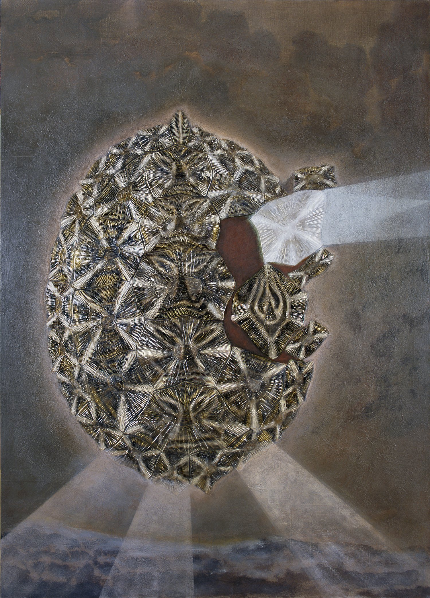
Y es importante además aquello que Plavinski quería mucho lograr y que logró: cada elemento del cuadro, por el valor del contenido pictórico, es igual al todo. Por eso los cuadros de Plavinski hay que mirarlos pasando todo el tiempo, por así decirlo, del todo al detalle y del detalle al todo. Y al mismo tiempo uno no puede comprender cómo cambia la pintura, el color. Al principio le parece que es un solo estado, pero cuanto más mira, más cambia ese estado pictórico: se vuelve más rico, se revela. Y es imposible comprender cómo está hecho. Si aquí hay una infinitud espacio-temporal, aquí hay también una infinitud pictórica; de lo contrario no habría la primera. Si no hubiera finitud, no habría tampoco lo fundamental.5
Es una pintura que, además de la ilimitada descriptividad, tiene también lo que llamamos con la palabra «factura». No es simplemente pintura, como pincelada sobre el lienzo, como huella del pincel sobre el lienzo. Cuanto más se escruta, más se comprende que esa pincelada sobre el lienzo se transforma ante nuestros ojos en un bajorrelieve pictórico. La pintura cambia la factura. ¿Cómo la cambia? Igual que la naturaleza cambia el paisaje. Son cuadros paisajísticos. Y Plavinski pinta pintura paisajística. No porque simplemente represente un paisaje, sino en el sentido que damos al concepto de paisaje, porque en el paisaje está todo. El paisaje es diverso: hay agua, hay tierra, hay colinas, hay árboles… Es una pintura muy paisajística, porque es extraordinariamente diversa en su vegetación pictórica, en toda su factura. Intente contar, mirando su cuadro, la cantidad de variantes y combinaciones de esas formas pictórico-plásticas.
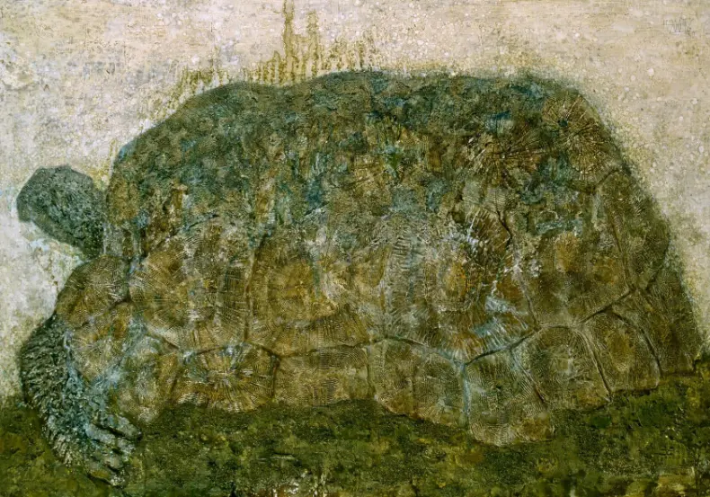
De otro modo Plavinski no puede pintar. Igual que cualquier artista muy grande, solo puede pintar su teoría. En rigor, cualquier artista pinta un solo cuadro a lo largo de toda su vida. Ese cuadro refleja el grado de su iniciación, el grado de su capacidad de transmitirnos cierto mensaje. Y todos los cuadros de Plavinski son su mensaje. Distintas variantes de un mismo mensaje.
Plavinski tiene una obra titulada «Tortuga española». Los escudos del caparazón de esa tortuga están desplazados de tal modo que recuerda a una nave espacial. Un mensaje cósmico. Y todos los escudos son distintos, todos están pintados de modo diferente. La tortuga está representada sobre fondo negro, y en esa negrura se precipita el misterioso signo del cosmos y de la eternidad. Una placa de ese caparazón está desplazada, y de allí brota una luz de otro mundo.
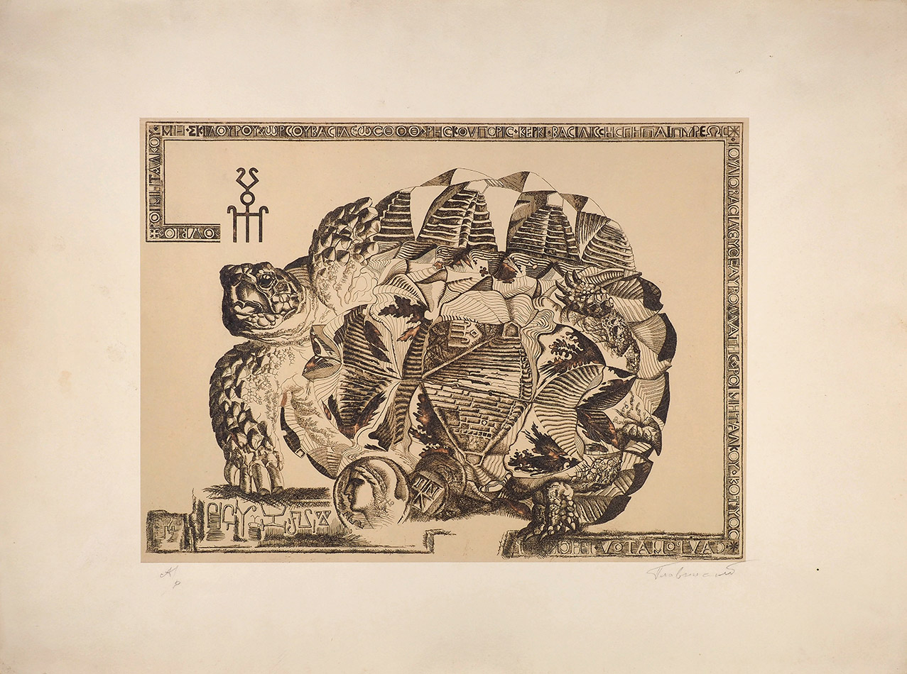
Otra obra de Plavinski es el cuadro titulado «Icosaedro resplandeciente». El icosaedro es un cristal, un poliedro convexo regular de veinte caras, cada una de las cuales es un triángulo equilátero. Cuando uno mira ese «Icosaedro», ejerce sobre él una influencia mágica. Podría llamársele cristal mágico, aunque el cristal mágico es cosa completamente distinta. El icosaedro es uno de los cuerpos platónicos, una conocida figura pitagórica.6 Es parte de la armonía pitagórica del Universo, porque la armonía del Universo en Pitágoras está descrita a través de la geometría. La armonía geométrica del Universo. Y el «Icosaedro» recuerda a la «Tortuga» de la que hablábamos antes: también él está compuesto todo de elementos iguales, de triángulos equiláteros, cada uno de los cuales puede uno representarse, por ejemplo, como el signo de una pirámide egipcia. ¿Qué es una pirámide egipcia? Es una forma absoluta; es imposible inventar nada más lacónico y universal. Y el icosaedro de Plavinski, compuesto de una infinitud de triángulos equiláteros, es la forma de la eternidad. El triángulo equilátero es la forma de la eternidad: no puede ser sustituido por nada, no puede sufrir dialéctica, no puede ser descrito de ningún otro modo; es algo absoluto e inmóvil.
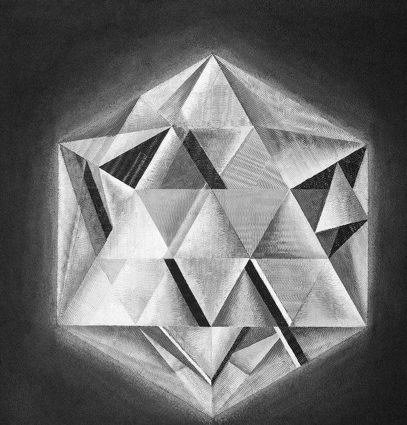
Y, por otro lado, la combinación de esos triángulos crea la infinitud del Universo. Y ese icosaedro puede ser cualquier cristal mineral; puede uno representárselo como microelemento de la naturaleza cristalina del mundo: inmutable, que no cambia. La tortuga puede acumular cualquier memoria a través de su movimiento a través del tiempo, venido no se sabe de dónde y que se va no se sabe adónde. Y esto es la forma de lo absoluto, que no se somete a ninguna dialéctica. Es densa e inmutable. La combinación de esas formas crea el Universo. El cristal en sí es parte constitutiva de todo, absolutamente de todo, de cualquier materia, empezando por los minerales y los elementos de nuestro organismo. Y en último término puede uno representarse el Universo como ese icosaedro.
¿Qué forma tiene nuestra Tierra? La exploración celeste hace mucho que informó con certeza de que la Tierra es esférica. Pero ¿y si tiene una forma mucho más compleja? ¿Y si tiene forma de icosaedro? ¿Quién sabe…? Simplemente es así ondulada, tiene muchos bosques, campos y ríos. Ese icosaedro es aquel elemento absolutamente inmutable, constante, que no se somete a ninguna dialéctica, que es la base cristalina de toda la materia terrestre y mundial. Es la esencia, es la sal de la materia del mundo.
Y de la combinación de esos triángulos puede componerse cualquier multiplicidad e infinitud. ¿Cómo describirlo? ¿Puede esto ser en general objeto de descripción? ¿O deben ser objeto de descripción obligatoriamente las flores, mi abuela, la vista desde la ventana, la vista desde el avión, el té en Mytishchi o en nuestra casa7, o cómo llevan en trineo a la boyarda Morózova camino de Bórovsk? ¿Y el icosaedro no puede ser objeto de descripción artística? Solo intenta describirlo… Y he aquí que Plavinski lo intentó y lo describió. ¿Qué describió? La idea pitagórica del mecanismo cristalino y de la misteriosa creación de ese cristal, la creación ideal. Describió la infinita multitud de posibilidades, de combinaciones de elementos, de los que está hecha la vida. Y los describió como describía los escudos de la tortuga. Por eso puede considerarse cada elemento de ese cuadro por separado. Aquí no hay nada que se parezca a otro elemento. Y así como las formas se parecen, la naturaleza de ellas es absolutamente distinta. Todas son absolutamente distintas. No solo están iluminadas de modo distinto, sino que ellas mismas son absolutamente distintas, y pictóricamente todas están definidas de modo absolutamente distinto.
Plavinski en general usa el color de un modo muy serio, muy cuidadoso. Su «Tortuga», por un lado, puede llamarse casi monocroma. Pero, por otro lado, no es monocroma. Aquí tiene una importancia enorme cómo cae la luz. Eso es la pintura.
Sobre el cuadro «Icosaedro resplandeciente» hay que decir además que es una de esas pequeñas obras de Plavinski que están dedicadas al tema de la armonía del mundo, de la armonía del Universo. Claro que el Universo está creado armónicamente. Si no estuviera creado armónicamente, si no se sostuviera sobre la base de la armonía, que es la música de las esferas, sobre la base de la simetría o la asimetría, de la infinita especularidad de los reflejos, como en ese cristal, no existiría nada. Desarmónicos son los hombres, pero el mundo es armónico.
Otro cuadro de Plavinski es «Huella de la memoria». Y aquí nos preguntamos de nuevo: ¿cómo está hecho esto, cómo está creado? ¿Qué significa «huella de la memoria»? La huella de la memoria puede, por supuesto, representarse en la música o en la poesía. Pero ¿cómo representar esa huella de la memoria en el arte descriptivo? Es la huella de la memoria del artista sobre un acontecimiento remoto, que fue completamente distinto, no tal como el hombre lo recuerda. ¿Qué es en general la memoria? La memoria, la memoria creadora, es propia solo del hombre, porque solo el hombre vive en la historia, existe históricamente. Y ese cuadro de Plavinski está creado de otro modo que todo lo que hemos visto. Está creado como «huella de la memoria». Aquí está nuestra memoria paleontológica, es decir, su capa más profunda. ¿Cómo puede expresarse? Plavinski da respuesta a esa pregunta cuando da nombre a aquello de lo que se ocupaba: es el simbolismo estructural. Y cuando hablamos de la memoria, debemos recordar ese término suyo, porque nuestra memoria está estructurada. No podemos recordar correctamente ni siquiera los acontecimientos del pasado reciente. En nuestra memoria hay lagunas. Y aquí la memoria hay que entenderla en el espíritu del simbolismo estructural, como una sustancia estructurada, expresada a través de símbolos.
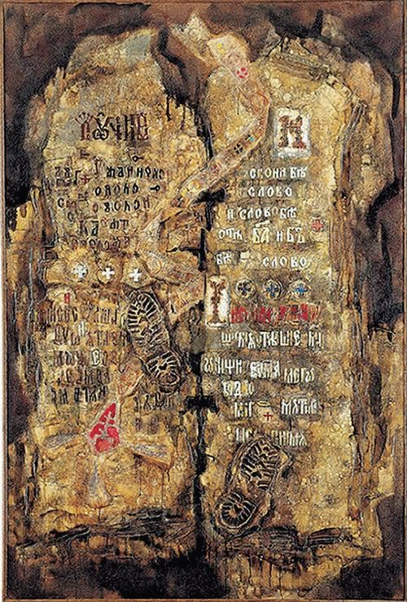
En la conversación sobre la memoria hay que mencionar el artículo de Merab Konstantínovich Mamardashvili8 sobre ese mismo simbolismo estructural de nuestra memoria. Él considera la memoria o la conciencia como símbolo. A ese tema la filosofía contemporánea dedica mucha atención. Y de nuestros filósofos los que más se ocuparon de ello fueron Merab Konstantínovich Mamardashvili y Aleksandr Moiséievich Piatigorski. ¡Y qué felices serían si hubieran visto esa obra de Plavinski! Ese cuadro de Plavinski es un manifiesto del simbolismo estructural. Es nuestra memoria, son las huellas del pasado, que están diseminadas por todo ese cuadro en distintos lugares y forman cierta estructura.
Es especialmente asombrosa en ese cuadro la parte de la concha en la que hay otra concha. Y he aquí lo interesante: por muchas que hayan existido de modelos del Universo, antiguos y nuevos, siempre se representan en forma de concha, y además exactamente en tres vueltas y media9. Y Nabokov escribe que la vida del hombre, el camino que recorre de principio a fin, cabe en tres vueltas y media.
Es curioso que «La Virgen de la silla», cuadro de Rafael, también encarna ese principio. En el centro está la Virgen con el Niño y con Juan el Bautista. Si se mira cómo esa Virgen con el Niño y con Juan el Bautista está inscrita en el tondo, se descubrirá que en la base hay una concha en tres vueltas y media10. Según la representación de los hombres del Renacimiento, el alma del Universo es mujer, esa Virgen. Está inscrita en esa concha en tres vueltas y media. Es decir, de nuevo encontramos ese símbolo recurrente: en la concha, una concha en tres vueltas y media. Es decir, la concha en sí es un modelo absoluto, universal, del Universo. Y nosotros somos parte de ese Universo, queramos o no. Ahora mismo, de tanto como se estremece el Universo, nos duele la cabeza cada segundo; ¿de qué puede hablarse en general?
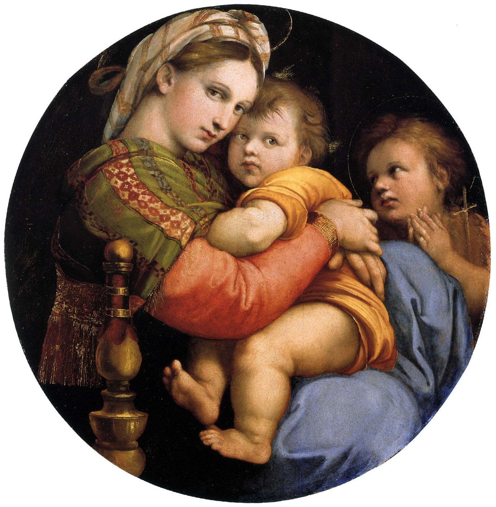
Por eso en el cuadro de Dmitri Plavinski hay esa capa de memoria paleontológica. Aquí hay, por supuesto, animales fósiles y la huella de un pez. Es la primera capa, si hablamos de estructura.
La segunda capa de nuestra memoria son esas piedras y el cristal, y además aquello con lo que comienza la memoria que tenemos del hombre. ¿Y con qué comienza? Con el fragmento de cerámica, con la cerámica. La memoria que tenemos del hombre comienza con el fragmento de cerámica, es decir, con el comienzo de su actividad cultural. ¿Cómo se llamaba a sí mismo el gremio de pintores en Florencia en el siglo XV? ¡Alfareros! Se llamaban a sí mismos alfareros.11 ¿Por qué? Porque al Creador lo llamaban el Gran Maestro: él, como artista, creó el mundo. Y creó al hombre de la arcilla, del polvo. He ahí que el fragmento de cerámica es lo primario. Y por eso se llamaban a sí mismos alfareros: lo primario es el alfarero. Los grandes maestros se unían a esa primariedad de la creación artística, al origen primero, a la raíz de la creación artística. Aquí vemos esos fragmentos de cerámica. Y vemos fragmentos de ornamento: siempre es el meandro, y siempre es onda e infinitud. Todo eso está aquí depositado.
Consideramos la obra de Plavinski en cuanto a contenido, por elementos, por niveles. He aquí un nivel: el paleontológico. Hay otro nivel, ya próximo a nuestra memoria de la actividad humana, de la actividad cultural del hombre: es el fragmento de cerámica. Es ya la actividad cultural histórica del hombre. La siguiente capa de la memoria es cómo el alma habla con Dios, cómo el alma habla con el Universo: son los instrumentos musicales. Porque los sonidos son la conversación del hombre con las estrellas, la conversación del hombre con Dios, la conversación del hombre con el Universo, es una llamada y una respuesta. Constantemente enviamos señales allí y esperamos un eco de allá. Por eso: la música y el instrumento musical. Quizá sea una antigua dombra. En todo caso, es parte de un conjunto de cuerdas, de cualquiera de ellos, todavía no modificado, aunque tenga una forma completamente distinta. Allí hay violines, violas, violas de gamba, dombras, algunos instrumentos populares antiguos… Pero en cualquier caso son cuerdas tensadas. Es un elemento muy importante, porque es el momento de la conversación del hombre con el mundo. Hay una antigua costumbre china de colgar campanillas en las pagodas: de bronce, de madera, de porcelana… Y cuando soplaba el viento, esas campanas empezaban a sonar, y cada pagoda tenía su voz. Y esas pagodas se contestaban entre sí: era arquitectura sonora, era un sonido que se transmitía de pagoda a pagoda. Era un mundo sonoro, y ese sonido venía del viento, es decir, venía del elemento, y no de la mano del hombre. Y así los hombres podían oír la voz del mundo. Por cierto, en Plavinski, en sus obras dedicadas al Tíbet, hay muchísimas campanillas. Y en su última obra, la campanilla…
Y la capa más tardía es el sonido, la voz plasmada a través de la escritura. Es la palabra. Y aunque se dice que en el principio era el Verbo, la simple palabra es ya forma de comunicación concreta. El alfabeto es lo más tardío que se ha creado. Y sabemos cuántas culturas geniales siguen hoy ciegas, sordas y mudas solo porque no conocemos su palabra. Y en Plavinski hay predilección por las palabras: en la Galería Tretiakov cuelga su «Palabra».
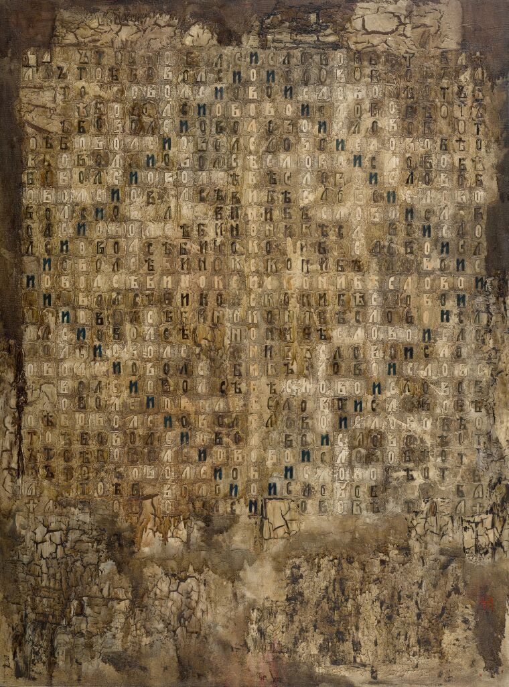
Todos esos niveles, que se muestran en el cuadro «Huella de la memoria», están como mezclados en una composición libre. Pero al mismo tiempo el artista crea dentro de esa composición la armonía. Y todos esos elementos están inconexamente conectados entre sí, como todo en nuestra memoria.
Aquí puede uno recordar los cuadros de Filónov. Es uno de los más grandes pintores del mundo. Y en él encontramos el mismo simbolismo estructural. Jlébnikov y Filónov tuvieron suerte12: vivieron en el tiempo en que vivieron Vernadski, Tsiolkovski, Albert Einstein. Fue el período en que los hombres, tras un olvido muy, muy prolongado, volvieron de nuevo a la doctrina de la unidad del mundo. Y en Plavinski vemos una inmersión absoluta en ese problema. No hay nada más. No le vino del aire; es, después de todo, un hombre de ese tiempo. ¿Por qué ese tema estuvo tanto tiempo olvidado? Porque cuando se desintegró la doctrina de la unidad del mundo, era el final de la Edad Media. Después comenzó la época de la Ilustración, y la época de la Ilustración es la época de la división: en otorrinolaringología, en terapia, en cirugía ósea, en géneros, en especies… Todo fue desmembrado en partes. El mecanismo único y armónico fue desmembrado en partes. Y ahora vuelve de nuevo el tiempo del retorno de la doctrina de la unidad del mundo. Y si ahora el mundo no vuelve a esa doctrina, todo irá muy mal, todo simplemente se desmoronará, se deslavará.
Ahora vuelve de nuevo la gran filosofía que proclama la unidad del mundo. Por eso Dmitri Plavinski se convierte en el artista más actual del tiempo. Los artistas actuales no son los que representan algo de lo que todos se preocupan ahora, algunos problemas candentes. En cuanto el problema se resuelve, deja de ser actual. Eso se llama ser del día, y a menudo confundimos lo del día con lo actual. Lo del día lo tomamos por lo actual. En otro tiempo existió el realismo socialista, el realismo estalinista («Cosacos del Kubán», cuadros en la VDNJ)13, y eso era lo del día, que llamábamos actualidad. Y la actualidad ahora es el retorno de la doctrina de la unidad del mundo. Comienza a principios del siglo XX, ahora simplemente crece; si no, no se construirían colisionadores, no se romperían la cabeza. La doctrina de la unidad del mundo vuelve, porque de otro modo no podemos. Era de Acuario, era del aire, no hay nada que hacer. Comunicación completamente distinta, todo en general completamente distinto. Por eso Plavinski se convierte en el artista más actual.
Podemos hablar así de ese cuadro solo porque él tiene el lenguaje para explicárnoslo. Vemos aquí un bajorrelieve, pero es un bajorrelieve peculiar. Tiene tres niveles. Aquí está el fondo mismo, sobre el que se fija ese bajorrelieve cristalino. El fondo rectangular de ese cuadro es algo que no conocemos. Y ya ese cristal es lo que decíamos antes sobre el «Cristal resplandeciente»14: es la naturaleza cristalina del universo, es simplemente la materia del mundo. Y ya la materia del mundo se expresa como capa paleontológica y todas las demás capas. Todos son distintos niveles del bajorrelieve único. La técnica misma de esta obra es una absoluta perfección artística.
Lev Nikoláievich Gumiliov dice que cualquier obra debe tener obligatoriamente tres niveles. En la poesía siempre se siente la presencia de esos niveles. Es interesante que también en Dmitri Plavinski cada cuadro tiene esos tres niveles. Solo ellos dan la forma, la forma espacial.
He aquí una de las últimas obras de Dima, que está claramente construida según esos tres niveles: «Mensaje de Pitágoras al mundo de la Música». Un título muy exacto, hay que decir. ¿Cómo da esos tres niveles en la construcción misma, en la forma misma del cuadro? Un nivel está tras el marco; el segundo nivel está separado de él, dentro del marco; y el tercer nivel es el libro, incluido en el marco. Si se mira simplemente cómo está resuelto el cuadro compositivamente, puede decirse que la composición de ese cuadro es arquitectónica. Y su arquitectura corresponde a la tarea de ese cuadro. Ese mundo que se saca al marco negro, como si fuera un cuadrado negro, está codificado. Está codificado por lo que podemos llamar el primer nivel, el superior. Está codificado por lo que es a priori objetivo, y es, quizá, lo que los griegos llamaban con la palabra «eidos», o lo que Vernadski llamaba con la palabra «noosfera». Aquí está expresada toda la sabiduría pitagórica.
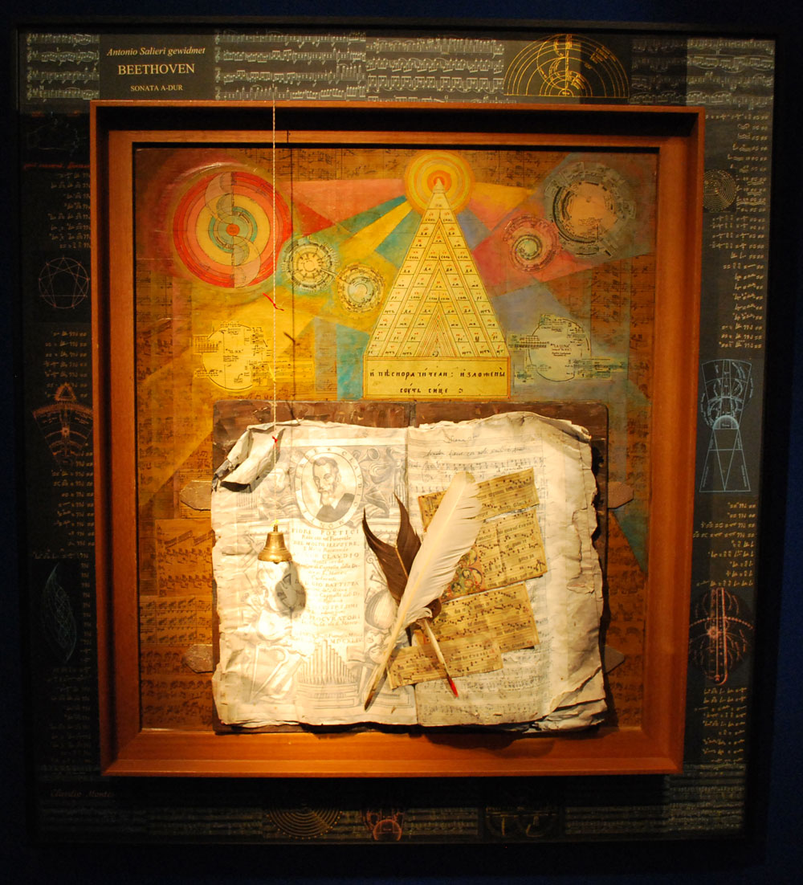
Las grandes mentes del pasado escribieron que el hombre no puede inventar nada por sí mismo, que recibe la información de la noosfera. Puede entregar información a la noosfera, puede recibirla de ella. Y los antiguos consideraban que todas las ideas se conservan en el eidos. El eidos es la idea. Y en el cuadro de Plavinski vemos el marco arquitectónico, como una cornisa que separa el piso siguiente. El piso siguiente es ya el nivel del conocimiento, lo que es la esfera, el medio del conocimiento. Allí, en esa su clave preferida, en la clave del simbolismo estructural, están designados los signos, los símbolos del conocimiento. Y, finalmente, el tercer nivel es lo que es conocimiento realizado. Están designadas las ideas que pueden ser extraídas, que pueden ser ya objeto de conocimiento. Y Plavinski concentra su atención en lo principal. Y une, combina de un modo muy interesante aquella campana de la que hablábamos antes, la voz de Dios, con las notas escritas por el compositor, es decir, con la música oída y plasmada. Ese cuadro lo creó un gran genio de la audición de las armonías. Salieri dice de Mozart15: «Como un querubín, nos trajo algunas canciones paradisíacas…» Los grandes creadores son como querubines que nos trajeron canciones paradisíacas, que las escribieron.
Hay aquí además otro tema interesante: el problema de la finitud. A veces se dice que todo es finito, que todas las melodías ya están escritas. Es una teoría difundida. No hay ópera, no hay romance, no hay versos. ¿Por qué? «Todas las melodías ya están escritas». Pero eso no puede ser. No pueden estar escritas. No pueden ser extraídas. Están escritas solo algunas de ellas, y luego se escribirán otras. Y he aquí que los querubines nos trajeron algunas canciones paradisíacas, que fueron escritas.
Hemos visto cuatro cuadros de Dmitri Plavinski: todos son sobre lo mismo, y ninguno se parece a otro. Y además de la pintura, Plavinski tiene aguafuertes. Toda su vida se ocupó del aguafuerte, del grabado. Plavinski no es un artista local, es un artista global. Es un artista vinculado a conceptos, y los conceptos son siempre globales. Y en sus aguafuertes hay lo que no hay en los cuadros. A pesar de que aquí los elementos están diseminados, al mismo tiempo están unidos. Hay en ellos ese «almacén de la memoria»: el almacén de la memoria antes de que apareciera el hombre, y después de que apareció, la memoria cultural del hombre, la memoria que se reviste de palabra. Admirablemente escribió Mandelstam: «Quizá antes de los labios ya nació el susurro y en la ausencia de árboles giraban las hojas…»16 Es genial.
Los aguafuertes de Plavinski son, por supuesto, completamente distintos. Pero antes del aguafuerte hubo además el «Libro de las hierbas»17, donde se sumergió por completo en el mundo de las hojitas, las florecillas menudas, las mariposas… Todo eso lo sintió como un universo. Su obra más famosa de ese ciclo es «Hoja cósmica». Después decía que cuando trabajaba en eso, cuando dibujaba, estaba tan inmerso en el material que temía pisar la tierra. Temía que allí, bajo el pie, hubiera obligatoriamente un gusanito o una hormiguita… Tan grandiosa resultó toda esa menudencia que dibujaba. Y después de eso, por supuesto, siguió el paso lógico hacia el aguafuerte.
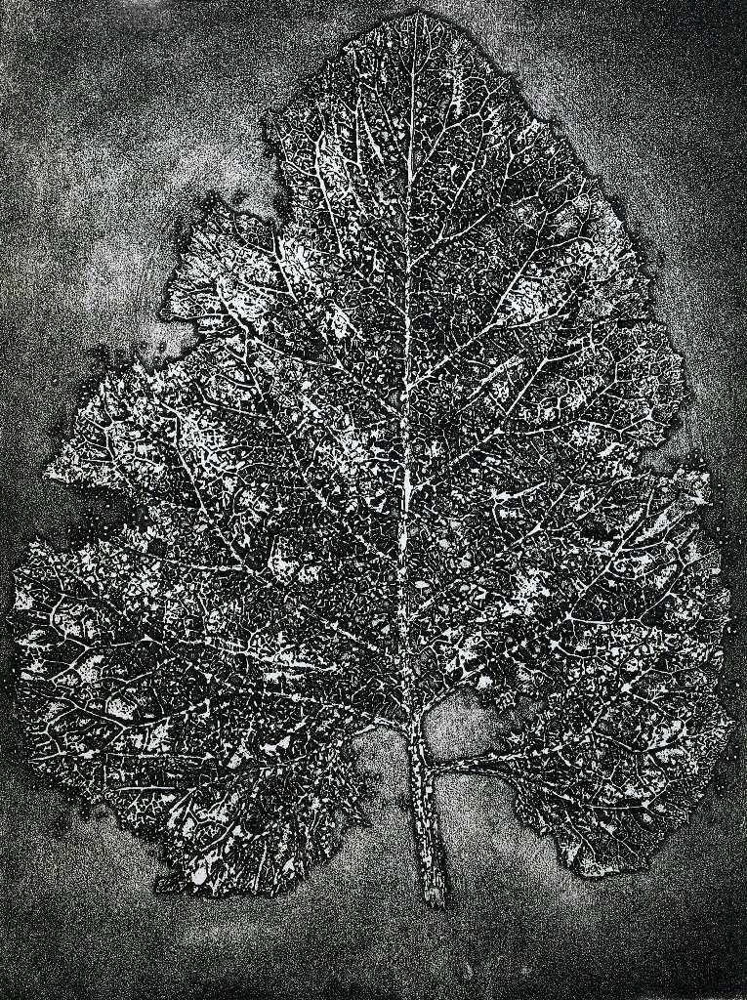
En el aguafuerte tiene dos temas principales: el nacimiento y la muerte. Precisamente en los aguafuertes crea siempre esa dualidad. ¿Por qué se volvió hacia los aguafuertes después del «Libro de las hierbas»? Porque siempre va desde la naturaleza. Otra cosa es cómo luego dispone de eso, cómo construye ciertas composiciones. Y, por supuesto, el aguafuerte es una técnica muy íntima, que exige del artista una observación muy atenta. Aquí hay una masa de detalles; uno sigue no solo el asunto o el encaje del propio trazo, sino que se sumerge en ese mundo que el artista le ofrece. Es una técnica muy laboriosa, y le venía muy bien a Plavinski. Haga lo que haga, todo comienza siempre con la observación del natural: muchas etapas, muchas capas que se superponen una a otra, y ya después algo se construye… y luego sigue la destrucción. Y solo después de eso puede venir el último trazo unificador, armonizador, o el glaseado, o algo más. Entonces la obra suelta al artista, y el artista suelta la obra.
Uno de sus aguafuertes más grandiosos es «Aldea abandonada»18: todo es perecedero, ese árbol, esa casa, la historia, la vida privada… y de nuevo la naturaleza germina a través de todo, y de nuevo todo se restaura, para que todo se repita desde el principio.
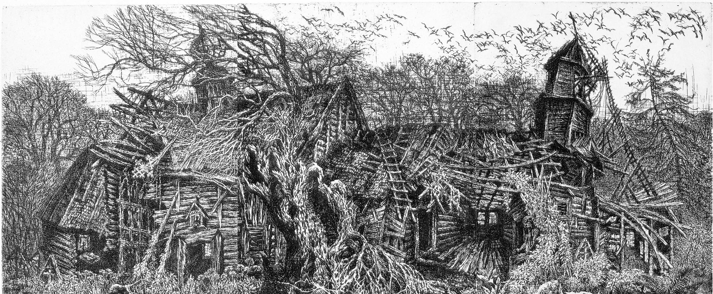
Y es muy significativo el aguafuerte con mariposas19, porque es también un tema querido de Plavinski: esos manuscritos, ese documento en corteza de abedul, ya carcomido, y en el interior, una mariposa. La vida de un solo día. Combinación del instante y la eternidad, de la palabra y la naturaleza… y el tema del instante y la eternidad. Cuando en él hay destrucción y creación de nuevo, no es solo destrucción y creación de nuevo, es trabajo y juego con la categoría del tiempo. El instante y la eternidad están confrontados. En él no hay destrucción porque sí: siempre es el instante y la eternidad. Ahí está la cosa. Es un tema muy cortante, que escuece: el tema del instante y la eternidad. Es asombroso que Plavinski haya logrado mostrarlo. Y es muy laborioso. En la base está puesto lo que más respetaban los antiguos: el trabajo invertido en la obra. Trabajo minucioso, profundo, trabajo artesanal, tiempo gastado en la creación… El cuadro es como cultivado por el artista. Y esa sensación de trabajo entra también en el efecto que se crea. Realizar esto de inmediato es imposible; hace falta tiempo.
Dmitri Plavinski es uno de los artistas más contemporáneos, porque se ocupa de los problemas más contemporáneos. Vive dentro del problema más contemporáneo: el problema de la memoria, el problema del tiempo y el problema de sentirse a sí mismo como un cristal en la naturaleza cristalina de las cosas. La doctrina de la unidad del mundo, el retorno a la doctrina de los antiguos: al parecer, nada más esencial se ha creado. Y todos vuelven de nuevo a eso. Todo lo demás es simplemente moda, cuando hoy se lleva una cosa y mañana otra. Y la moda pasa muy rápido.
En la conversación sobre Plavinski hay que tocar el tema de lo arcaico. Lo arcaico no es algo así petrificado, hace mucho pasado, que a nadie le hace falta. Lo arcaico es lo que contenemos en nosotros y dentro de nosotros. En lo fundamental son imágenes del pasado. Pero ¿hasta qué punto está eso en nosotros? Hay formas de conciencia absolutamente abierta. No cerrada, como en la mayoría de las personas, en las que la conciencia está concentrada en los problemas cotidianos, no es libre, está sujeta a las preocupaciones diarias; sino abierta, cuando es absolutamente libre. Esa conciencia abierta la tuvieron personalidades aisladas, como Dmitri Plavinski o el poeta Velimir Jlébnikov. El encuentro con Jlébnikov en Plavinski se produjo, era inevitable. Se produjo en su cuadro «Palabra sobre El», que está construido sobre la unión de textos de Jlébnikov con imágenes de formas eternas del ser. En Plavinski hay una conciencia absolutamente desplegada; es un artista. Su conciencia está abierta a lo ancho, a lo profundo, a lo alto; es capaz de absorber en sí todas las formas del ser pasado. Pero su fuerza consiste en que sabe expresarlo a través de la imagen artística. Porque el tiempo es cosa asombrosa; es difícil darle una definición, el concepto de tiempo es difícil de revelar. Es, por un lado, muy estático, porque contiene en sí imágenes irremediables de nuestro conocimiento parcial, fragmentario, y de la memoria de la naturaleza y la cultura, que están unidas entre sí. Y al mismo tiempo es dramáticamente dinámico. Anna Ajmátova tiene unos versos notables20; decía:
Ajmátova se refiere a esa destrucción. Y lo interesante en Plavinski es que en su pintura, en sus aguafuertes, siempre hay un sentimiento de la carrera del tiempo, la unión de algo que desaparece con algo que crea. Dos acciones simultáneas del tiempo: destrucción y creación. Es siempre imagen. Ama mucho las imágenes arcaicas de nuestra memoria primera, de nuestra cultura primera. Por ejemplo, el texto primario: los documentos en corteza de abedul, la corteza de abedul sobre la que la gente escribía como sobre papel o pergamino. ¿Y qué es la corteza de abedul? Es la corteza del árbol, es la corteza de la naturaleza, es la envoltura de la naturaleza, y sobre ella hay escrituras. ¡Qué imagen poética tan sobrecogedora por su significado y su profundidad!
Miremos el aguafuerte «Mariposa». Ante nosotros hay un documento en corteza de abedul semipodrido, casi desplegado, en el que han anidado mariposas, polillas. Es la vida de ese documento en corteza de abedul, que lleva sobre sí las huellas del tiempo, convertido en belleza. El tiempo todo lo hace hermoso. El tiempo todo lo afila como imágenes estéticas, acabadas. ¿Y qué puede haber más hermoso que la vida que nace y desaparece al instante de las polillas o las mariposas? La unión del documento en corteza de abedul, que se desplegó con gran trabajo, y las mariposas de asombrosa belleza que se descubrieron en él. ¿Cómo puede traducirse por completo esa imagen al texto de la palabra, cuando esa imagen es artístico-poética, artístico-mágica? En eso está todo Dmitri Plavinski.
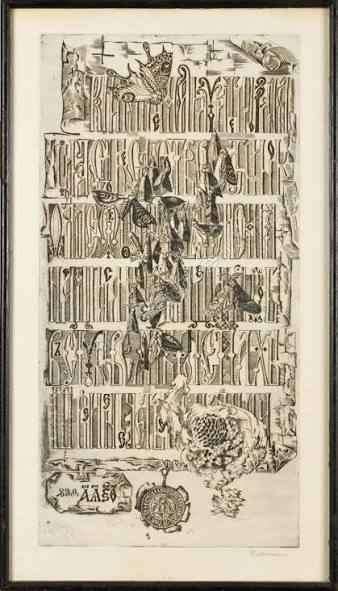
En su obra van siempre en paralelo la pintura y el aguafuerte. Además, su pintura es a veces pintura pura, a la que estamos acostumbrados, en las representaciones técnicas de la pintura: lienzo, pintura. Pero es interesante que su pintura adquiere rasgos y propiedades maravillosos de otros géneros artísticos. Por ejemplo, muy a menudo se convierte en relieve pictórico, incluso en escultura pictórica, o en unión de pintura con bajorrelieve. ¿Por qué? Porque lo exige la tarea de ese cuadro. Por eso su pintura es extraordinariamente diversa dentro de un mismo cuadro por los procedimientos, por la relación con el material. Usa el material que necesita para transmitir el mensaje. Y representa a las asombrosas tortugas que tanto ama en la pintura y en el grafismo: tiene toda una serie. La tortuga es de por sí imagen arcaica del tiempo, de algo que va a través del tiempo. Y la tortuga en él se convierte en una reliquia artística petrificada en el tiempo, en un reptil artístico. Y su caparazón es tan complejo, tan interesante… Por eso Plavinski recurre a distintos procedimientos para mostrar la belleza de las formas plásticas petrificadas. Por eso en él la tortuga lleva en sí todo.
En Plavinski hay una conciencia arcaica, libre, que crea un montaje de naturaleza, formas culturales, épocas. En sus cuadros está captado el tiempo vivo, que destruye y crea, expresado a través de la forma artística cultural. Es extraordinariamente actual. Son actuales las preguntas artísticas y filosóficas, aquellas a las que hoy no podemos dar respuesta. Son preguntas eternas, a las que eternamente damos respuestas y nunca podemos responder del todo. Y por eso el arte de Plavinski, su creación artística, por un lado, está vuelto hacia el abismo de lo infinito, lo arcaico y lo incognoscible en la profundidad del tiempo; y por otro lado, es infinitamente actual. Y cuanto más pase el tiempo, más actual será, porque nos haremos preguntas a las que hoy no tenemos respuesta. Son para nosotros misteriosas. Y sus cuadros y sus aguafuertes plantearán eternamente esa pregunta, a la que eternamente daremos respuesta. ¿Cómo lo hace? Por supuesto, ese es su misterio.
La pintura y el aguafuerte no son exactamente lo mismo. Porque el aguafuerte es una técnica especial; del auténtico aguafuerte clásico medieval se ocupan hoy muy pocos artistas. Es un proceso técnico muy escrupuloso y laborioso, con mordido e impresión, es cosa compleja. El tiempo ahora se apresura; mejor clavar dos tablas a una tercera, y a la tercera una cuarta, y encima sentar a una chica desnuda y decir: «¡Oh, esto es una palabra nueva! ¡Esto no existía! ¡Es post-post-post-post-postmodernismo!» Plavinski, en cambio, está vuelto hacia la técnica probada: es técnica medieval, es técnica laboriosa, es trabajo con la plancha. Da la posibilidad de examinar detalles y procesos finísimos, imposible en la pintura. La pintura de Plavinski incluye una gran diversidad de técnicas, y es pintura sintetizadora. Y sus aguafuertes son analizadores, es decir, permiten examinar de cerca los elementos, los detalles. El aguafuerte hay que llevarlo obligatoriamente a los ojos; uno puede tenerlo en la mano, examinarlo constantemente.
Plavinski tiene un aguafuerte asombroso: «El sudario de Staritskaia»21. Es imposible examinarlo entero y hasta el final: tal cantidad hay en él de elementos artísticamente autónomos y a la vez artísticamente perfectos. Uno examina ese aguafuerte, del todo a los detalles, y de ningún modo puede examinarlo hasta el final. «El sudario de Staritskaia», que hizo Plavinski, es impresión constante y cotidiana e invitación al diálogo, invitación a la conversación. La cultura debe ser dialógica, y Dmitri Plavinski es muy dialógico. Aunque parezca mentira, ¿cómo puede el arte ser dialógico? No es drama. Pero no, aun así es drama, que puede llamarse drama del conocimiento artístico. Sucede que uno mira algo una vez y no vuelve más, y aquí durante años uno mira lo mismo, lo examina infinitamente. Es conocimiento paulatino, prolongado en el tiempo, porque en Plavinski el todo se combina asombrosamente con los elementos de los que está tejido. Cuando uno mira sus aguafuertes, ve esa necesidad, esa exigencia de examinar el todo.
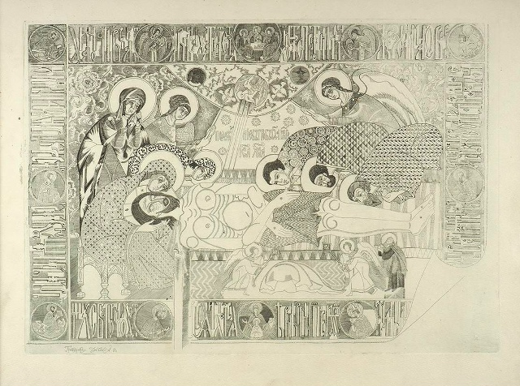
Y he aquí una de sus últimas obras, que produce una impresión grandiosa: es su improvisación, es un cuadro dedicado a la música. Ese cuadro contiene multitud de detalles, pero al mismo tiempo representa un pensamiento íntegro. Y hay que decir unas palabras sobre ese pensamiento, sobre la integridad de ese pensamiento en ese cuadro. Es muy complejo, y nosotros, claro, solo superficialmente podemos analizarlo. ¡Pero cuántos detalles hay en él! Los detalles están compuestos de otros detalles, y esos, de terceros, y así sucesivamente. Es como una suerte de modelo superatomístico de la estructura del mundo, según la óptica que uno tome: si mira el mundo por el telescopio o si ese mismo mundo lo examina por el microscopio. En Plavinski hay ese conocimiento óptico. El conocimiento del cuadro en general puede llamarse óptico: uno cambia todo el tiempo la óptica cuando examina sus cuadros. ¿Hay algún otro artista contemporáneo que tenga tal cuadro del mundo? ¿Y cómo puede llamársele? Ahora en la ciencia y en la cultura vuelve a asomar lo que parecía olvidado para siempre, lo que era propio de las formas tempranas de la cultura y era propio del arte medieval: es la integridad originaria de la representación del mundo. En otro tiempo, en el pasado, los artistas tenían la integridad de la representación del mundo, cuando cada elemento contenía en sí todo, como la gota que contiene la estructura del océano y del agua corriente. Exactamente igual, en un elemento estaba contenido todo. Y en el todo estaba contenida la diversidad de aquellas formas de las que está tejida esa elementalidad.
Hablamos intelectualmente del artista y del arte solo porque no tenemos ante los ojos esos cuadros que percibimos con enorme emoción: emoción de conocimiento, de descubrimiento. Para nosotros lo más importante es, por supuesto, el goce de las formas del arte de Plavinski: las percibimos estéticamente, las sentimos estéticamente. Es una cualidad asombrosa del arte.
Dmitri Plavinski es un artista asombroso, que entró en nuestro arte a finales de los años 50 y comienzos de los 60. Estuvo junto a todos. De otros nombres hay que mencionar además a Dmitri Krasnopevtsev. Pero en lo fundamental todos entonces se apasionaban por Zvérev: por su amplitud, su anchura, su arco iris pictórico, la garra de su ojo, que captura el retrato. ¿Y sus figuras de animales? El descubridor de Zvérev fue Aleksandr Aleksándrovich Rumnev22, actor, profesor de pantomima, coleccionista, gran conocedor del arte. Él descubrió a Zvérev, y lo amaba mucho. Pero la figura número uno era Dmitri Plavinski, porque lleva en sí un mundo enorme. Precisamente en él encontramos esa integridad de la representación del mundo. El arte y la ciencia deben volver a la integridad de la representación del mundo. Tratar el arte como un análisis de sangre es incorrecto. Que me digan que tengo muchos o pocos eritrocitos en la sangre no significa que tenga una enfermedad relacionada con ellos. Son simplemente eritrocitos. Y nada más. No: hay un organismo entero, hay un hombre entero, y si le duele un dedo, es que está enfermo en general, porque en el organismo todo está ligado entre sí. Y, probablemente, Dmitri Plavinski es el único que puede mostrar esa ligazón, esa conexión de todo con todo. ¿Y qué es el cemento de esa conexión? El cemento de la conexión es la permanencia en un vuelo temporal, en un espacio temporal.
He aquí un cuadro asombroso, uno de los últimos cuadros de Plavinski, que expresa la representación de todo eso a través del tiempo. Pues el tiempo no es un concepto abstracto. El tiempo está siempre materializado. ¿Cómo puede uno representarse miles de millones de años? Pero si veo un huevo de dinosaurio, entonces el tiempo está cosificado y veo miles de millones de años durante los cuales existe ese huevo. Si veo el corte de un árbol y los anillos anuales que se forman con el tiempo, puedo calcular por ellos la edad de ese árbol. Ese corte da sensación del tiempo, y él mismo encarna la belleza, cuando la naturaleza se convierte en forma estética acabada, terminada. Eso es lo que Plavinski ama mucho hacer, y crea una sensación real del tiempo. Porque el tiempo está materializado a través de ese corte de árbol. La Antigüedad está materializada no a través de la ruina como tal, sino a través de la representación de la integridad que da esa ruina. No solo la integridad de la forma, sino la integridad del vínculo de esa forma con aquella representación del mundo en la que vivían los hombres, del cielo, del agua, de Dios. Y en Plavinski eso está en los cuadros sobre la Antigüedad.
Y si hablamos de la música, responder a esas preguntas es imposible. Plavinski tiene muchísimos cuadros dedicados a la música. Sus formas musicales en esos cuadros se vuelven especialmente afinadas y perfectas; teme equivocarse en algo. Y aquí está presente su sentimiento profético o poético del tiempo como imagen y como profecía poética. Intuitivamente comprende lo mismo que en su día expresó admirablemente en un verso Mandelstam: «Quizá antes de los labios ya nació el susurro y en la ausencia de árboles giraban las hojas».
Pueden aducirse aún muchos ejemplos. Picasso tiene el ciclo «Corrida», que consta de toda una serie de platos23 en los que está representada la corrida en proceso de desarrollo, desde su comienzo hasta su día actual. Y el primer plato era así: era completamente blanco, y sobre él con un palito de madera (o quizá con el extremo de madera de un pincel) estaba trazada la silueta de un toro. El toro como idea existía ya cuando el toro aún no existía. La corrida ya existía entonces. Así también la música en Plavinski: existía cuando aún no existía. Y en su cuadro está esa imagen de la música que existía cuando aún no existía. ¿De dónde lo sabemos? Quizá del ritmo, quizá de la música se tejía la imagen del mundo, su densidad, su materialidad… La música existe no solo en nuestra percepción; existe más allá de nuestra percepción; existe como el movimiento del gusano en la tierra, si se le conecta a sensores. Existe en todo. El sonido y el ritmo de los sonidos de la naturaleza: eso es la música. Pero hay además sonidos detrás de la naturaleza: es la música de las esferas, que describían los antiguos, que describían los pitagóricos, como una suerte de visión, como una suerte de realidad. Es como Laplace, que en la punta de la pluma descubrió un planeta más24: existe, aunque nadie lo haya visto, parecía que no existía, pero él lo calculó, y resultó que existe. Así en Plavinski, en el marco exterior del cuadro está captado ese mundo de la música, calculado por los pitagóricos antes de que apareciera, esa música de las esferas. En Plavinski están reflejadas todas las etapas de la penetración de la música en el mundo, hasta el momento en que se convirtió en música (es decir, cuando se convirtió en lo que llamamos música). En el cuadro de Plavinski se produce la plasmación de ese sonar musical elemental, cosmo-terrestre o extraterrestre y terrestre. Se plasma en una armonía musical manifestada, consonante con nuestra percepción. Así existe en él la música de Bach, la música de Mozart. Y por eso su cuadro es absolutamente genial: en él están todos los niveles, todos los grados del afloramiento de la música desde aquel mundo donde está, pero no estamos nosotros ni nuestra imaginación, hasta el momento en que se convierte en notas sobre el papel pautado, en la pluma con la que la escribieron los grandes compositores. Nosotros llamamos música precisamente a eso: a lo que se nos manifiesta como obra musical para la ejecución. Pero en realidad la música está también más allá de esos límites. Porque la naturaleza es música. Porque lo que está detrás de la naturaleza es música. Porque, quizá, la música es la primariedad de la materia, es decir, su ritmo, su sonido, desconocido para nosotros, pero existente.
Mirando el cuadro de Plavinski, comprendemos que es un artista que posee la integridad de la representación del mundo. Y esa representación la expresó no en un tratado, sino en la pintura, que está construida de un modo muy interesante, que nos conmueve profundamente. Y por muy original y autónoma que sea la letra artística de Plavinski, que no puede confundirse con nada ni de ningún modo, aun así es un artista del siglo XX. Por eso vemos muy bien su vínculo con el arte de otras épocas. Digamos que es completamente evidente su profundo vínculo con Durero, porque Plavinski, como Durero, aspira a la absoluta perfección de sus formas artísticas. Siempre las lleva a la perfección. Igual que Durero, es muy atento a los detalles, escrupuloso: como artista del final de la Edad Media, como artista gótico, como artista del Renacimiento… En ese cuadro está su música, y en ese enmarcado negro de uno de los marcos, que son como «capítulos» de su «saga» artística sobre la música, hay huellas de Malévich y de los artistas del siglo XX. Habla con nosotros en el lenguaje del siglo XX, pero piensa como un creador intemporal, supramundano, como un artista fuera del pueblo y del tiempo, y dentro del tiempo y del pueblo. Eso es la gran libertad artística. Solo puede permitírselo un artista que puede demostrar su derecho profesional a la excepcionalidad.
La última obra de Plavinski, «Camino hacia el infinito», asombra por su singularidad25. Es un retorno muy raro a algo que hoy toca profundamente a cada uno de nosotros. Esa obra asombra por el presentimiento de la cercanía de la frontera, de la cercanía del borde histórico. Plavinski aborda aquel tema que planteaba Dante en la «Divina comedia»: el tema del paraíso y el infierno, esos miasmas con los que envenenamos la vida. Aquí se acumulan todas esas imágenes de Dante y de Goya, todas las imágenes de destrucción, de putrefacción. Se han acumulado muchísimas, y rompen la envoltura incluso de un artista-todo sobre el mundo-todo como Dmitri Plavinski. «Camino hacia el infinito» produce una impresión muy fuerte. Naturalmente, esa obra recuerda también a las visiones del Bosco y a los temas de las obras de Goya. Pero, por supuesto, en él está resuelta de modo completamente independiente. «Me parece oír por los caminos del aire dos voces que se llaman…»26 Todas esas obras están dedicadas a un mismo tema: el tema de la perdición que traen los miasmas acumulados del mundo.
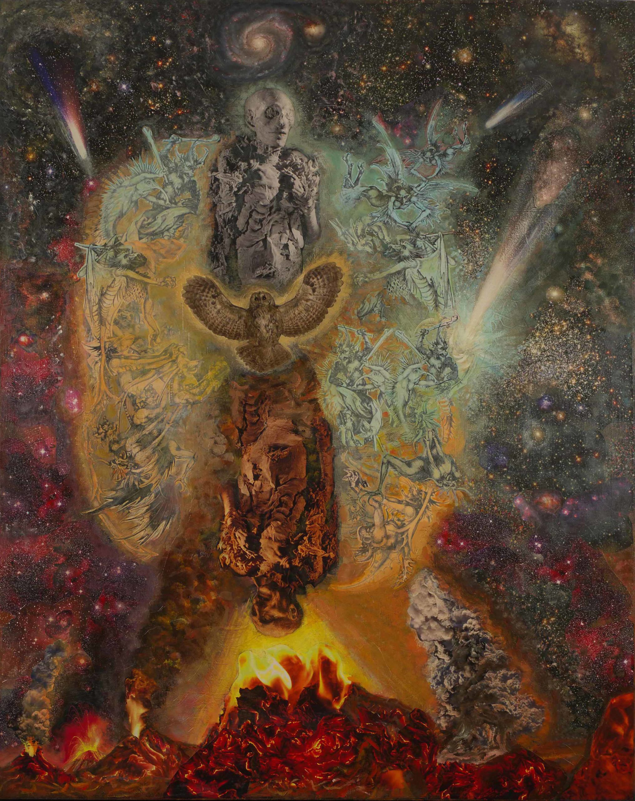
En general Plavinski aspira siempre a la catarsis. En él está muy marcadamente expresada la aspiración a la catarsis, que no es purificación y destrucción, sino que es la representación de la Antigüedad sobre la armonía mundial. Porque la catarsis es siempre el resultado de la restauración de la armonía. A través de la tragedia se produce la restauración de la armonía. Eso siempre fue propio de Plavinski. En él siempre hubo la imagen del tiempo que destruye y crea a través de ciertos conflictos. Y el resultado era siempre la restauración de la armonía en las cosas. Es la única cosa que tan trágicamente «corta el alma en dos», por decirlo con palabras de Vysotski27.
De la generación de Dmitri Plavinski han quedado muy pocos artistas, y él es quizá el único de toda su generación que trabajó de modo tan absolutamente pleno y cabal. No tuvo detención creadora; estaba constantemente en estado de creación. ¿Y por qué? Porque eligió una vida ocupada solo por el arte, liberada de comunicaciones superfluas, de impresiones vitales superfluas que ahora no le hacían falta, cortada de las pequeñas tentaciones, de todo aquello en lo que no sabemos negarnos. Fue un hombre infinitamente ascético. Claro que no era un santo; era un hombre muy pleno, pero eligió ese camino. Hizo una elección. Dmitri Plavinski es un hombre que, por un lado, tenía cierto destino, una misión, y por otro lado, una libre elección. Eligió la creación y la vida creadora hasta el final, las prefirió a las presentaciones, a las exposiciones, a los conciertos y a diversos entretenimientos. Y su esposa María Plavinskaia compartió con él todo eso y le ayudó en todo. Son una pareja que se complementa. Y en la última obra, «Trirreme de Troya»28, utiliza sus fotografías en su collage.
Hay personas así, personalidades absolutamente aisladas, independientemente de la vida que vivan. Son precisamente personalidades, y personalidad es el hombre que se determina a sí mismo, y no es determinado por otros. A ellos puede adscribirse Lev Nikoláievich Gumiliov. Cabría preguntarse: ¿qué puede haber más terrible que la vida que vivió? Casi toda su vida transcurrió en campos, con algunas interrupciones, de 1938 a 195629. Tuve ocasión de conocer a Lev Nikoláievich en 1966, en Pskov, donde trabajaba con Vsévolod Petróvich Smirnov, cuando Smirnov hacía una cruz de cobre en la tumba de Anna Andréievna Ajmátova30. Gumiliov pasó muchos años en campos; no le dejaban en absoluto estudiar, pero vivió su propia vida autónoma tal como consideraba necesario vivirla, a pesar de todo. ¿Fue reclamado por el tiempo? ¡Nunca! Fue activamente perseguido por él, fue odiado por él. Pero ese hombre fue el creador de una teoría única, que debe estar muy cerca de Plavinski: es la teoría de la etnogénesis. Es la teoría de la etnogénesis y de la pasionariedad, y no de la historia como historia y la geografía como geografía. Es una teoría que considera los procesos en su unidad e interacción: cómo la historia étnica de los hombres une en sí el uso de la tierra y el agua con los acontecimientos históricos, con la aparición de personalidades históricas. Gumiliov describe las etapas de la etnogénesis. ¿Qué es la personalidad? Es el hombre que vive la vida que él mismo construye, a pesar de cualesquiera circunstancias. Todas las circunstancias en la vida de Gumiliov estaban contra él. Pero él construyó su vida como consideraba necesario. A pesar de haber pasado toda la guerra en batallones de castigo, y a pesar de haber estado en los campos más terribles, creó una gran cantidad de trabajos sobre esa teoría de la etnogénesis. Y ahora todos lo conocen, todos sus libros se venden… Si en 1966 alguien hubiera dicho que sus libros se venderían en las tiendas, habría sido imposible de creer.
Por lo demás, hay que señalar el siguiente hecho. Una gran cantidad de personas conoce hoy su nombre, lee sus libros. ¿Pero acaso alguien comprende lo que lee? No. Porque cuando uno oye a la gente hablar de lo leído y cómo emplean las palabras «pasionario», «pasionariedad», queda claro que nadie comprende siquiera lo que ha leído. Y a menudo se considera pasionaria a una personalidad que no lo es.
Pero para nosotros ahora es importante que Gumiliov y Plavinski son hombres de una misma semilla, de una misma tribu: la tribu de los hombres interiormente libres, que crean su propio mundo, no reclamados por el tiempo, pero que van maníacamente solo por ese camino sin el cual no pueden vivir.
Hay aún otro ejemplo: Tonino Guerra. Italiano, acomodado, próspero, que vivió noventa y dos años, guionista, clásico del Renacimiento italiano en el ámbito del cine. Hizo todas las películas con Fellini31, con Antonioni, con Francesco Rosi, con los hermanos Taviani… ¡con quién no trabajó! Y pertenece a esa misma tribu. Tonino Guerra es el creador de una dramaturgia absolutamente nueva, que no existía aún, de un teatro nuevo, exactamente igual que en su día Chéjov creó un teatro nuevo. Chéjov tuvo su director, Stanislavski. Chéjov estaba descontento con él como director, y aun así Stanislavski fue el primero en poner en escena las piezas de Chéjov, todavía en vida de este, aunque las comprendía de un modo completamente distinto de como las comprendía Chéjov. El creador del teatro fue Esquilo. Grandes creadores del teatro fueron no solo los dramaturgos, sino también directores como Meyerhold.
Ahora el teatro está en crisis. Del hecho de que la gente vista a Hermann o a la condesa-abuela con trajes contemporáneos no surge una nueva ópera ni un teatro nuevo. Eso se llama «el caftán de Trishka». Es recoser, es volver del revés: «Vamos a darle la vuelta de este modo». Recordemos cómo en «Los huevos fatales» el admirable Bulgákov describió a Meyerhold32, a quien no amaba, cuando ponía «Boris Godunov» y los boyardos colgaban cabeza abajo en las espalderas. «Boris Godunov» hay que ponerlo como lo escribió Pushkin. ¿Para qué colgarlos en las espalderas? Pues bien, Tonino Guerra creó un teatro nuevo. ¿Qué puede decirse de su dramaturgia? Es un teatro asombroso. Todos los dramaturgos describen nuestro mundo, aunque de modos distintos, en géneros distintos. Y si necesitan que los héroes pronuncien un monólogo interior, para que sepamos de qué se trata, como en Molière o en Shakespeare, los actores se vuelven a un lado y pronuncian el monólogo interior como para sí mismos. Y Guerra creó el teatro de la conciencia. Son piezas de una belleza extraordinaria, de las que es difícil incluso hablar. Sería bueno que esas piezas se publicaran en ruso, para que los directores las conocieran. Quizá se encuentre algún joven que comprenda cómo hacer ese teatro nuevo. Tonino Guerra a los noventa y dos años creó un teatro nuevo, que nadie reclama. Y Tonino Guerra mismo tampoco era muy reclamado, porque, a pesar de todo, no se permitía distraerse. Igual vivió Gumiliov. Igual vivió Dmitri Plavinski.
Estas personas no se conocían entre sí, no estaban vinculadas entre sí. Pero tienen rasgos iguales: el tiempo pasa a través de ellos, un enorme torrente de tiempo, y ellos pasan a través de ese tiempo, realizándolo en su nivel: a través de los cuadros y aguafuertes de Plavinski, a través de la teoría de la etnogénesis de Gumiliov, a través de las nuevas piezas de Guerra… Y esa tribu abigarrada, de distintas naciones, distintos tiempos, distintos destinos, tiene siempre un mismo rasgo: por encima de todo, la libertad interior de la personalidad, el ascetismo y la autorrealización, sin reparar en las circunstancias en las que viven.
Notas del editor
1. Dmitri Plavinski (Moscú, 1937 – Moscú, 2012), pintor y grabador de la segunda vanguardia moscovita, la llamada «no conformista». Paola Volkova fue amiga suya; de ahí que más adelante lo llame «Dima», diminutivo familiar de Dmitri.
2. Lev Gumiliov (1912–1992), historiador y etnólogo, hijo de los poetas Nikolái Gumiliov y Anna Ajmátova. Su teoría de la etnogénesis y la «pasionariedad» se expone sobre todo en «Etnogénesis y biosfera de la Tierra» (1979). La autora vuelve a él al final del capítulo.
3. Alusiones a cuadros muy conocidos de la Galería Tretiakov: los niños de «Troika» y el féretro de «Despedida del difunto», ambos de Vasili Perov; «La boyarda Morózova», de Vasili Súrikov; la luna recuerda «Noche de luna en el Dniéper», de Arjip Kuindzhi, más que a Savrásov. La identificación es nuestra y es probable, no segura.
4. La idea se acerca a lo que Kandinski expone en «De lo espiritual en el arte» (1911), pero la frase no es una cita literal localizada.
5. La frase es oscura también en el original ruso («Если не будет конечной — не будет и основной»), probablemente por una transcripción defectuosa de la conferencia. Se traduce literalmente.
6. Los cinco poliedros regulares se llaman «sólidos platónicos» porque Platón, en el «Timeo», asigna el icosaedro al agua. La tradición atribuye a los pitagóricos el conocimiento de algunos de ellos; la construcción del icosaedro suele atribuirse a Teeteto, en el siglo IV a. C.
7. Juego con el título de otro cuadro de Perov, «Té en Mytishchi, cerca de Moscú» (1862), en la Galería Tretiakov.
8. Probablemente la autora se refiere al libro que Mamardashvili escribió con Aleksandr Piatigorski, «Símbolo y conciencia», redactado en los años setenta y publicado en 1982. No se trata de un artículo ni de una obra solo de Mamardashvili.
9. Afirmación de la autora, sin base conocida: los modelos cosmológicos no se representan siempre así. La referencia a Nabokov tampoco la hemos podido localizar. En «Habla, memoria» Nabokov describe la espiral como un «círculo espiritualizado», pero no habla de tres vueltas y media.
10. Lectura personal de la autora. La composición circular de la «Virgen de la silla» se ha analizado muchas veces, pero no como una espiral de tres vueltas y media.
11. No hay constancia de esto. En la Florencia del siglo XV los pintores estaban inscritos en el Arte dei Medici e Speziali, el gremio de médicos y boticarios, y tenían su cofradía, la Compañía de San Lucas. La imagen de Dios como alfarero que modela al hombre con barro es bíblica (Génesis 2,7; Jeremías 18).
12. Velimir Jlébnikov (1885–1922), poeta futurista, y Pável Filónov (1883–1941), pintor, creador del «arte analítico». Fueron coetáneos de Vladímir Vernadski (1863–1945), que formuló la idea de noosfera, y del teórico de la astronáutica Konstantín Tsiolkovski (1857–1935).
13. «Cosacos del Kubán» (1949) es una película de Iván Pýriev, emblema del optimismo oficial de la posguerra estalinista. La VDNJ es la Exposición de Logros de la Economía Nacional, en Moscú.
14. Lapsus de la autora, también en el original ruso («Сияющем кристалле»): se refiere al «Icosaedro resplandeciente».
15. Alexandr Pushkin, «Mozart y Salieri» (1830), escena I. Salieri dice: «Como un querubín, nos trajo algunas canciones del paraíso…».
16. Ósip Mandelstam, de los «Octavas» (1933–1935).
17. Serie de dibujos a pluma de plantas, hojas e insectos que Plavinski hizo en los años setenta. «Hoja cósmica» (1975) pertenece a ella.
18. Lapsus probable de la autora, también en el original ruso («Заброшенная деревня»): el aguafuerte catalogado de Plavinski es «Iglesia abandonada» («Заброшенная церковь», 1975), que responde a la descripción y es la imagen que reproducimos.
19. Probablemente el mismo grabado que la autora comenta más adelante como «Mariposa». No consta ningún aguafuerte de Plavinski con ese título. Su descripción (un manuscrito antiguo semideshecho con mariposas posadas sobre la escritura) corresponde al aguafuerte «Свиток» («El rollo», 1971), «donde sobre los escritos se posan mariposas que ocultan el texto», según la reseña de Radio Svoboda sobre la exposición de 2015. Reproducimos ese grabado; la identificación es probable, no segura. Los documentos en corteza de abedul aluden a las gramotas medievales de Nóvgorod.
20. Poema de 1961 que dio título a su último libro, «La carrera del tiempo» (1965). La fecha del poema es aproximada; el título del libro es seguro.
21. La plashchanitsa es el paño litúrgico ortodoxo bordado con la imagen de Cristo en el sepulcro; la más célebre salió en 1561 del taller de bordado de la princesa Evfrosinia Starítskaia y se conserva en el museo de la Lavra de la Trinidad y San Sergio. En los catálogos el aguafuerte de Plavinski figura solo como «Плащаница» («El sudario», 1968); el complemento «de Staritskaia» parece de la autora. Reproducimos ese grabado; la identificación es probable, no segura.
22. Anatoli Zvérev (1931–1986) y Dmitri Krasnopevtsev (1925–1995) fueron, como Plavinski, figuras del arte no oficial moscovita. Aleksandr Rumnev (1899–1965), actor y mimo, fue uno de sus primeros valedores. Otros atribuyen ese papel al coleccionista Gueorgui Kostakis.
23. Picasso decoró muchos platos de cerámica con motivos taurinos en Vallauris a partir de 1947. La idea de un toro que se simplifica progresivamente hasta la pura silueta corresponde, sin embargo, a la serie de litografías «El toro» (1945–1946), con once estados. La autora parece mezclar ambas.
24. Error de la autora: fue Urbain Le Verrier quien calculó en 1846 la posición de Neptuno, observado ese mismo año por Johann Galle. François Arago dijo que Le Verrier había descubierto un planeta «con la punta de la pluma». Laplace había muerto en 1827.
25. Al final del capítulo la autora llama también «última obra» al «Trirreme de Troya». Plavinski murió en septiembre de 2012; «Camino hacia el infinito» está fechado en 2011.
26. Anna Ajmátova, «Somos cuatro» (1961), poema que evoca a Mandelstam, Pasternak y Tsvetáieva. La autora no lo atribuye. «Перекличка» significa «llamada y respuesta»; la traducción anterior decía «contrapunto».
27. No hemos podido localizar la expresión en las canciones de Vladímir Vysotski.
28. El original ruso dice «Триера Трои» («Trirreme de Troya»); la traducción anterior decía, por error, «Tríada de la Trinidad». No hemos podido verificar la datación de la obra.
29. Gumiliov fue detenido en 1935 (liberado poco después), en 1938 (campo hasta 1943) y en 1949 (campo hasta 1956). Entre 1944 y 1945 sirvió como voluntario en el Ejército Rojo y llegó hasta Berlín. Según sus biógrafos sirvió en una unidad antiaérea regular, no en un «batallón de castigo» como dice la autora más abajo.
30. Ajmátova murió en marzo de 1966 y está enterrada en Komarovo, cerca de Leningrado, no en Pskov. Es posible que la cruz se hiciera en un taller de Pskov. No hemos podido verificar los datos del escultor ni del encargo.
31. Exageración: Guerra (1920–2012) escribió con Fellini «Amarcord», «Y la nave va» y «Ginger y Fred», no todas sus películas. Fue el guionista habitual de Antonioni y colaboró también con Rosi, los Taviani, Angelopoulos y Tarkovski («Nostalgia»).
32. En «Los huevos fatales» (1925) se menciona el «Teatro Meyerhold, fallecido en 1927» durante un montaje de «Boris Godunov» en el que se desplomaron los trapecios con los boyardos desnudos. Es una sátira del teatro biomecánico, no una descripción de un montaje real.